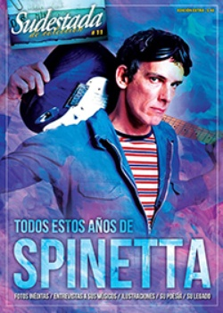

Buscar
Signos del alma
¿Cómo desandar la huella artística de un músico inabarcable? ¿Por qué camino salir a buscar los ecos de una obra que resuena hasta nuestros días? ¿Con qué palabras describir los laberintos sonoros y las letras que van y vienen entre la filosofía, el surrealismo, lo existencialista y los sentidos en su estado de máxima pureza?
Edición Especial N° 11
Todos estos años de Spinetta
Sudestada de Colección
Comprar edición impresaSumario
- Signos del alma
- Spinetta de la A a la Z
- "Luis nunca paraba de crear"
- "Spinetta trascendió el rock"
- Cuánto amor puede caber en las canciones
- Cantar al Flaco en ritmos de la tierra
- "Luis nunca dejó de crecer musicalmente"
Compartir Articulo
Tarea difícil si las hay, pero por eso mismo tomamos la decisión de arremangarnos y salir a buscar a sus bandas eternas, a aquellos músicos y artistas que lo acompañaron a lo largo de toda vida y de su obra. Y en ese horizonte de bandas, rastrear los géneros musicales por los que indagó, en esos devenires eclécticos, pero a la vez tan pulidos, ensayados y profundizados. Tan Spinetteanos.
Ante una ausencia que se agiganta con el tiempo, buscamos asir al Flaco un poco más, por eso lo eternizamos en sus palabras, aquellas que no conformaron su universo musical sino las dichas en entrevistas, charlas, escenarios. "La palabra tiene signos, la música tiene moléculas de aire que hacen vibrar los tímpanos", dijo en una oportunidad... valgan esta vez sus palabras reflejadas en el diccionario spinettiano y en su "Tester", donde se recorre su veta más poética e imaginativa.
Y cuando de sostener en el tiempo el legado de un artista se trata, aparecen periodistas y escritores para entreverarse con el Flaco en largas charlas y disquisiciones. Por un lado está, entonces, Eduardo Berti quien repasa la trastienda de Crónica e iluminaciones, el libro de conversaciones que armaron junto a Spinetta en 1988, y en el que durante varios meses repensaron juntos su obra disco por disco para conocer algunas pistas de sus momentos de creatividad y vuelo artístico. Y por otro, Juan Carlos Diez nos habla de su libro de 2006 Martropía, conversaciones con Spinetta, una obra que abarca los sueños, canciones, literatura y vivencias puestas en palabras del Flaco.
Pero nunca, nunca, habrá que olvidarse de la música, y de aquellas bandas en las que intervino a lo largo de su carrera artística. Y así llegamos a (o empezamos por) Rodolfo García, compañero de Almendra, la primera banda del Flaco pero además una de las precursoras del incipiente rock nacional. Y en esa relación fraternal y musical que supieron tener, el destino quiso que con él formara un trío que resultó ser, además, su última banda.
Pero el Flaco siempre fue un buscador, donde el final del camino no aparecía nunca, simplemente porque su objetivo, incluso trabajando en un proyecto, estaba abierto a lo nuevo, al cambio, a buscar otra cosa. A eso que Rodolfo caracterizó como "su ética musical", una forma de ver al artista en constante estado de creación y de cambio.
Y así fue que, tras las baladas de Almendra, Spinetta se fue a intentar crear otro universo. Y aparecen así, músicos, amigos, seres con los que se fue encontrando en ese trayecto nunca lineal que trazaba el Flaco: su hermano, Gustavo Spinetta, el baterista del disco Artaud, lo recorre desde el afecto y la cercanía. Pero también el bajista Frank Ojstersek, quien fue parte de Spinetta Jade en 1981 da cuenta de esa banda que surgía en en plena dictadura y represión cultural. Y Carlos Franzetti, arreglador del disco Lalala y de algunos conciertos nos cuenta sobre la nostalgia tanguera que vivía en el Flaco. Pero también aparece la cantante Isabel de Sebastián, miembro de las Bay Biscuits, quien junto a Fabiana Cantilo, fue de las primeras voces que eligió Spinetta para sumar a un disco propio para recordar recitales compartidos, charlas y largos encuentros.
Y los recorridos caprichosos nos vuelven al jazz, un estilo que es parte del tejido que va atravesando su obra entera, la sostiene y la envuelve y por eso las nuevas generaciones reversionan e improvisan sobre la base de sus melodías, aun las más antiguas. De ello da cuenta uno los músicos Diego Schissi, que pese a no haber tocado junto a Luis interpreta muchas de sus creaciones en el escenario.
Ligado a las búsquedas está el disco triple Raíz Spinetta que acaba de salir y que contiene los acordes de una nueva generación de músicos de la raíz folklórica con un ojo puesto en la tradición y otro en la contemporaneidad y que cuenta con muchas de esas versiones de obras del Flaco y otras nuevas con un sonido cuidado, sutil, siempre con las coordenadas que él fue marcando.
Pero así como el jazz o el folklore lo acompañan en su obra musical, el dibujo y la pintura hacen lo suyo: por las tapas de sus discos (tan de entrecasa algunas, con esos detalles de autor que las hacen únicas), por la forma en que su búsqueda en las letras se orientó siempre a una representación artística; y quién si no el talentoso pintor Luis Scafati para dedicarle un trabajo completo a la obra del Flaco, en un libro donde las letras de sus canciones encuentran su representación en cada pincelada del dibujante.
Con la cámara como instrumento en lugar del pincel, son muchos los fotógrafos que quisieron retratar a Spinetta, pero unos pocos pudieron capturarlo en cuerpo y alma. Gustavo Saiegh, uno de esos privilegiados, recuerda la sesión que le realizó a fines de los ochenta en el que el Flaco jugó a ser muchos, incluso con distintos vestuarios.
Mucho queda afuera cuando se profundiza en la obra de un artista que se distingue por la originalidad con la que, siempre, llevó adelante su música. Pero acá empezamos el camino de indagar en su legado, que se multiplica y se expande, y que deja el mote de "músico de culto" para los que no se animan a conocerlo en profundidad. En el barrio de Belgrano, aún hoy, las veredas siguen marcadas por las extensas caminatas del Capitán Beto y sus secuaces en busca de un misterio que insiste en no ser develado...
Comentarios

Sudestada
El colectivo de Revista Sudestada esta integrado por Ignacio Portela, Hugo Montero, Walter Marini, Leandro Albani, Martín Latorraca, Pablo Fernández y Repo Bandini.
Articulos más vistos


LIBRERÍA SUDESTADA

Colección infantil

Distribuidora de Libros

Suscripción

Sudestada en URUGUAY

Otros articulos de esta edición
"Luis nunca paraba de crear"
Inmerso en la banda Amel, su nueva motivación con la música hace seis años y en la que toca la ...
 Un diccionario del Flaco...
Un diccionario del Flaco...
Spinetta de la A a la Z
Las palabras, efímeras e incompletas, de vez en cuando nos permiten acercarnos a las cosas. En la obra gigante de ...
 Raly Barrionuevo y su encuentro con el Flaco
Raly Barrionuevo y su encuentro con el Flaco
Cuánto amor puede caber en las canciones
El Flaco Spinetta, antes de cantar, dijo: "Si no cambiamos la educación, si no la ponemos firme, la debacle va ...
 Carlos Franzetti
Carlos Franzetti
"Luis nunca dejó de crecer musicalmente"
El pianista, compositor arreglador y orquestador Carlos Franzetti vive en Estados Unidos desde los años setenta. En agosto de 2014 ...
 Sobre el disco Raíz Spinetta
Sobre el disco Raíz Spinetta
Cantar al Flaco en ritmos de la tierra
Una idea que nació al modo de micros radiales para FM La Folklórica 98.7 Mhz, de Radio Nacional, se transformó ...
 Eduardo Berti
Eduardo Berti
"Spinetta trascendió el rock"
A 25 años de su primera edición, Eduardo Berti repasa la trastienda de Spinetta. Crónica e iluminaciones, el libro de ...